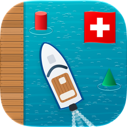

Lernen für die Theorieprüfung zum Schiffsführerausweis: Motorboot (A) und Segelschiff (D).
Gratis, ohne Werbung, ohne Konto, ohne Tracking. Die App erklärt den Stoff der Theorieprüfung für die Kategorien A (Motorboot) und D (Segelschiff) mit eigenen Übungsfragen. Zu jeder Antwort gibt es eine Erklärung und den Artikel aus dem Gesetz im amtlichen Wortlaut. Dazu die Praxis: Manöver und Knoten als Animation. Auf Deutsch, Französisch und Italienisch, für iPhone und iPad.
Bald im App Store · Datenschutz · Hilfe und Kontakt
Gratuite, sans publicité, sans compte, sans pistage. L’app explique la matière de l’examen théorique des catégories A (bateau à moteur) et D (bateau à voile) avec ses propres questions d’exercice. Chaque réponse est accompagnée d’une explication et de l’article de loi dans sa teneur publiée. En plus, la pratique : manœuvres et nœuds animés. En français, en allemand et en italien, pour iPhone et iPad.
Bientôt dans l’App Store · Protection des données · Aide et contact
Gratuita, senza pubblicità, senza account, senza tracciamento. L’app spiega la materia dell’esame teorico delle categorie A (battello a motore) e D (battello a vela) con domande d’esercizio scritte apposta. Ogni risposta ha una spiegazione e l’articolo di legge nel testo pubblicato. In più la pratica: manovre e nodi animati. In italiano, tedesco e francese, per iPhone e iPad.
Presto nell’App Store · Protezione dei dati · Aiuto e contatto